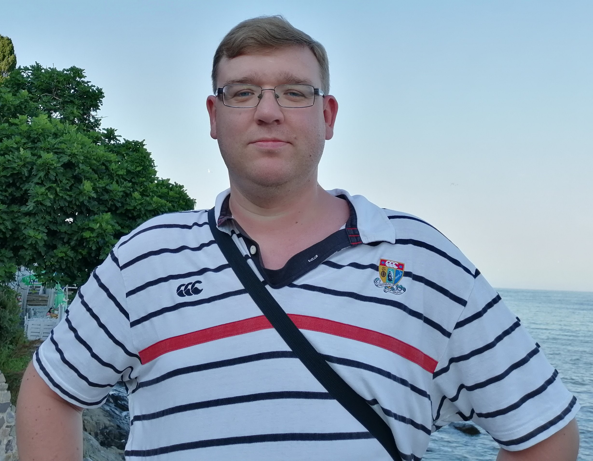

Yauhen Vaznishchyk
| Minsk, Belarus | evgen.vozn@gmail.com |
| +375296556050 | konan845 |

Job objective: Junior front-end developer
Profile:
I am extremely self-motivated for career change goal. I can describe myself as a disciplined, responsible, honest, stress-resistant and attentive to details person. I am good at communication with other people and team-player
Education:
| Belarusian State University Law faculty |
2001-2006 |
| Minsk State Linguistic University Courses "English language in the professional activity of a specialist" |
2017-2019 |
| Epam UpSkill Lab in progress | 2020 |
Career:
| 2006-2011 | Investigator at the Prosecutor's Office of the Republic of Belarus |
| 2012-2020 | Investigator for the serious crimes in the Main Investigative Department of the Investigative Committee of the Republic of Belarus |
Skills:
HTML, CSS, JavaScript
Languages:
Russian (native), Belarusian (native), English (pre-intermediate), Spanish (basic)
Interests:
Trips, intellectual games (member of the Belarusian league of intellectual teams)